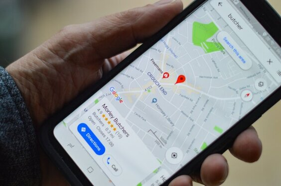

Is your business easy to find online?
Businesses that are not findable on the internet might have difficulty getting more clients. A lot of people rely heavily on what they find online for options to get the product or service that they need. You might be missing customers just because your business location, website, phone number, or even open hours, are not findable online. You yourself might have gotten frustrated at the fact that you cannot seem to find the product or service you need with a small google search. We at Ubícame GT want to help you and the communities to grow by making as many businesses available at every possible platform offered.

This is how we help you be findable
Some people use Google, some go directly to Google Maps, or Waze, while others use Facebook, or Instagram to find what they are looking for. They could be finding you instead of your competition, or the big companies that do show they are located at Mall kiosks, or stores, or that are already widely known locally. If you don’t know how or would like to get a hand increasing your chances of being found, we are here for you. We offer completely free support on getting your business to be easily visible and findable on Social media, Google Maps, Waze, Facebook, and Instagram. We are also open to lending a hand with setting up WhatsApp Business, Telegram, Messenger, Snapchat, Twitter, and other Social networks that may allow your potential clients to find you.
Is your business suitable to have an online presence though?
The kind of businesses we can help are pharmacies, neighborhood convenience stores, bakeries, meat stores, temporary food sales, car washes, fruit and vegetable stands, restaurants, gifts stores, tortilla stores, barbershops, pet shops, gyms, laundromats, miscellaneous stores, and basically, any business that has no online presence or that wishes to have a better online presence, regardless of the business size. If I did not mention your business type we will still help you. We want your local neighborhood to bloom economically by having more access to find businesses close by that have what you offer.


Check out how to get started here